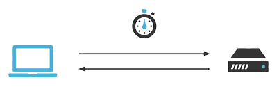
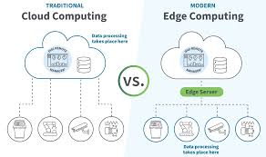
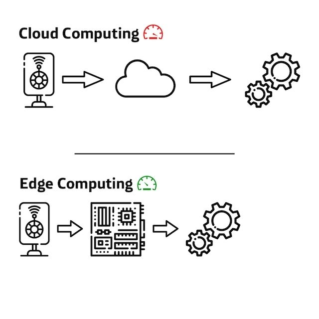
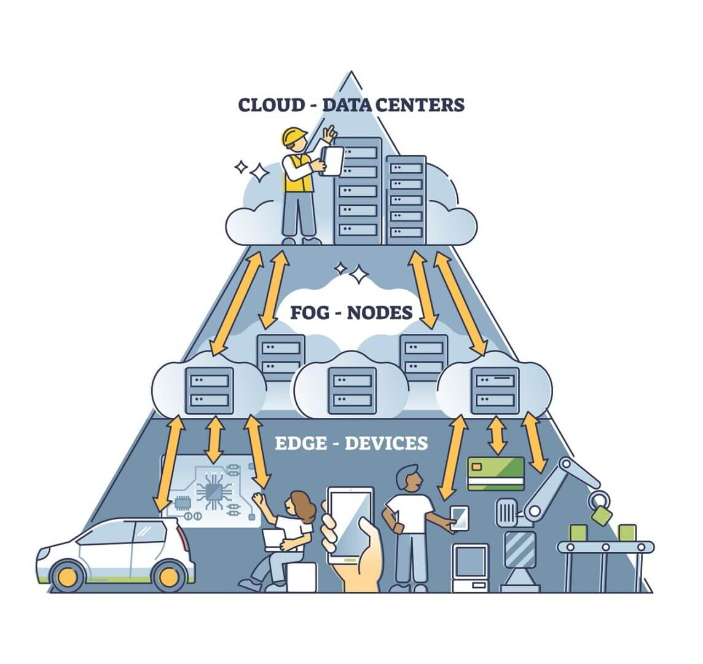
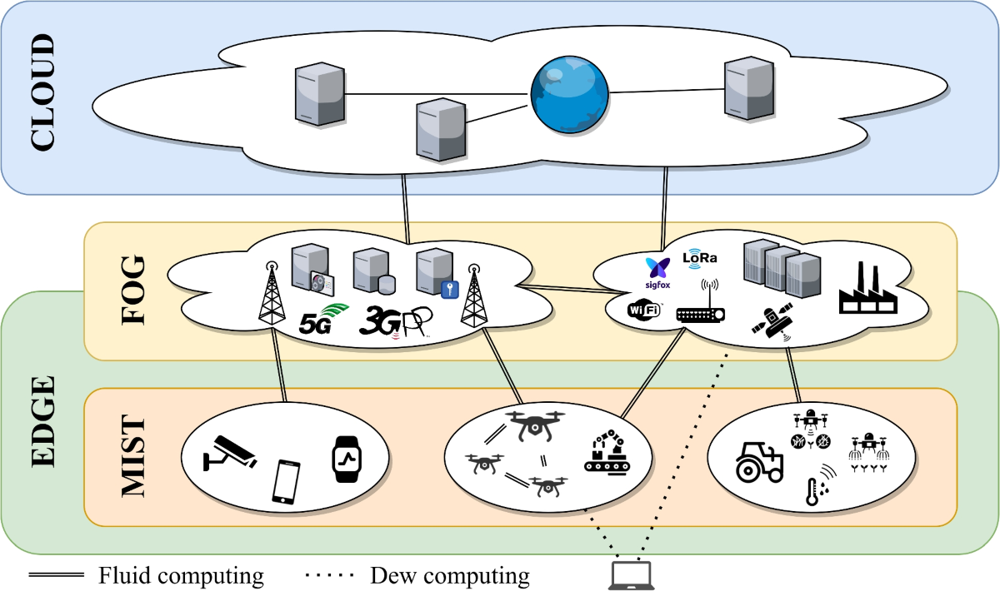

Sesión 3 Edge, fog y mist computing
cuando la nube no llega a tiempo”
RA
RA3. Identifica la estructura de los sistemas basados en cloud (nube), describiendo su tipología y campo de aplicación.
c) Se ha descrito el concepto de edge computing y su relación con la cloud.
d) Se han definido los conceptos de fog y mist, y sus zonas de aplicación en el conjunto.
e) Se han identificado las ventajas que proporciona la utilización de la cloud en los sistemas conectados.
- 1 Edge computing: procesamiento cerca del origen del dato (router avanzado, gateway IoT, servidor local, dispositivo).
- 2 Fog, mist, y sus zonas de aplicación
- 3 Ventajas el uso de Cloud
1️⃣- Edge computing
“dónde se procesa” la información en sistemas cloud modernos:
- Cloud (nube) : procesamiento y almacenamiento en centros de datos remotos .
- Edge (borde) : parte del procesamiento se hace cerca del origen del dato (dispositivo, sensor, router, gateway, micro-datacenter local).
- Relación : lo habitual hoy es una arquitectura híbrida : edge para lo inmediato + cloud para lo global .
Términos clave:
1) Edge computing (computación en el borde)
Idea: procesar datos cerca de donde se generan para responder rápido y no enviar todo a la nube.
Ejemplo: una cámara en un parking detecta matrículas en el propio dispositivo (o en un mini-servidor local) y solo envía a la nube: matrícula, hora y foto relevante (no todo el vídeo 24/7).
2) Cloud computing (computación en la nube)
Idea: ejecutar servicios y guardar datos en infraestructura remota (IaaS/PaaS/SaaS), escalable.
Ejemplo: el sistema central del parking (usuarios, facturación, informes, copias de seguridad) está en la nube y se accede vía web.
3) Latencia
Idea: tiempo desde que ocurre algo hasta que el sistema responde.
- Edge reduce latencia (respuesta más inmediata).
- Cloud suele tener más latencia por distancia/red.
Ejemplo: en una fábrica, si un sensor detecta sobretemperatura, el edge puede parar una máquina en milisegundos . Esperar a la nube podría ser demasiado lento.

4) Ancho de banda
Idea: capacidad de transmisión de datos por red. Enviar “todo” a la nube puede saturar.
Ejemplo: 20 cámaras HD enviando vídeo continuo a la nube = costoso y pesado. Con edge, se procesa localmente y se manda solo lo relevante (eventos).
5) Procesamiento local vs centralizado
- Local (edge): decisiones rápidas, filtrado, control en tiempo real.
- Centralizado (cloud): análisis global, coordinación, históricos.
Ejemplo: edge decide “hay movimiento” (local). cloud hace analítica mensual de patrones de movimiento (central).
6) Filtrado / agregación de datos
Idea: transformar datos crudos en datos útiles antes de enviarlos.
Ejemplo: sensores IoT de humedad envían cada segundo lecturas. Edge calcula medias por minuto y solo sube promedios + alertas .
7) Edge device / Gateway
Idea: equipo en el “borde” que conecta sensores/dispositivos con la nube y ejecuta lógica.
Ejemplo: un gateway en un invernadero recoge datos por Zigbee/Bluetooth de sensores y los manda por 4G a la nube.
8) Fog computing (computación en niebla)
Idea: capa intermedia entre edge y cloud (no siempre se exige, pero ayuda a contextualizar): mini-infraestructura “cerca” pero no en el dispositivo.
Ejemplo: en un edificio, un servidor local (fog) coordina todos los sensores/plantas; la nube recibe resumen e históricos.
9) Arquitectura híbrida (Edge + Cloud)
Idea: repartir tareas según necesidades: rapidez/localidad vs escalado/global.
Ejemplo típico (muy evaluable):
- Edge: detección inmediata de fallos, control.
- Cloud: almacenamiento histórico, dashboards, IA entrenada con muchos datos.

10) Resiliencia / funcionamiento offline
Idea: si falla Internet, el edge puede seguir operando.
Ejemplo: un TPV (o sistema de control de acceso) puede validar localmente ciertas reglas y sincronizar con la nube cuando vuelva la conexión.
11) Privacidad y soberanía del dato
Idea: ciertos datos sensibles pueden quedarse localmente y subir solo lo mínimo.
Ejemplo: reconocimiento facial: el edge decide “autorizado/no autorizado” y sube solo el resultado, evitando enviar imágenes personales a la nube.
12) Casos de uso típicos
Los más comunes en edge computing podrían ser:
- Industria (IIoT) : control en tiempo real.
- Vehículos/robotización : decisiones instantáneas.
- Smart cities : cámaras/sensores distribuidos.
- Retail : analítica en tienda sin depender siempre de cloud.
- Salud : monitorización con respuesta rápida.
Ejemplo: un semáforo inteligente ajusta tiempos localmente por tráfico (edge) y la nube coordina la ciudad a gran escala.
Resumiendo:
Edge computing es un enfoque donde parte del procesamiento y análisis de datos se realiza cerca del origen para reducir latencia, ahorrar ancho de banda y mejorar resiliencia , mientras que la cloud se usa para almacenamiento, escalado, analítica global y coordinación .

Fuente web telefónica TECH
💻 Actividad 1:
Lee el siguiente artículo y extrae un párrafo que te resulte interesante
- Enlace a artículo de telefónica TECH
- Completar el siguiente documento por parejas y subir el PDF a vuestro Portfolio
2️⃣- Fog, mist, y sus zonas de aplicación
RA3.d) Fog y mist computing y sus zonas de aplicación

Definición
Fog computing es un modelo de computación intermedio entre la cloud y el edge , que permite procesar datos en nodos cercanos (servidores locales o gateways) para reducir latencia y tráfico hacia la nube.
Mist computing lleva el procesamiento al dispositivo final (sensores, actuadores), ejecutando tareas muy simples directamente en el punto donde se generan los datos.
Ambos se integran con edge y cloud dentro de arquitecturas distribuidas.

Zonas de aplicación
- Mist → sensor / actuador (procesamiento mínimo, decisiones muy simples)
- Fog → gateway / servidor local (agregación, control cercano, coordinación)
- Cloud → centro de datos remoto (almacenamiento, análisis global, gestión)
💻 Actividad 2:
Continúa con el documento compartido anterior para completar y responder a las siguientes preguntas:
📝 Ejercicio 1 – Relaciona concepto y ubicación
Indica dónde se realiza el procesamiento principal:
a) Un sensor de temperatura que decide si supera un umbral. → _ b) Un servidor local que agrupa datos de varios sensores. → _ c) Un sistema web que genera informes mensuales. → ____
(Respuestas esperadas: mist / fog / cloud)
📝 Ejercicio 2 – Verdadero o falso
Marca V o F y justifica brevemente una de ellas.
a) Fog computing se sitúa más cerca de la cloud que del edge. ☐ b) Mist computing realiza procesamiento complejo de grandes volúmenes de datos. ☐ c) Fog computing ayuda a reducir la latencia respecto a la cloud. ☐
📝 Ejercicio 3 – Completa la frase
Completa correctamente:
- El modelo ____ ejecuta pequeñas decisiones directamente en sensores.
- El modelo ____ actúa como capa intermedia entre edge y cloud.
📝 Ejercicio 4 – Caso rápido
En una ciudad inteligente , los sensores de ruido detectan picos, un servidor local coordina semáforos y la nube almacena históricos.
Indica qué parte corresponde a:
- Mist: ____
- Fog: ____
- Cloud: ____
3️⃣- Ventajas el uso de Cloud
| Ventaja de usarclouden sistemas conectados | ¿Qué aporta? | Ejemplo breve |
|---|---|---|
| 1)Escalabilidad bajo demanda | Aumentar/reducir recursos según carga | Domótica pasa de 200 a 20.000 usuarios y el backend escala sin comprar servidores |
| 2)Acceso remoto y ubicuo | Consultar/controlar desde cualquier lugar (con permisos) | Técnico revisa sensores de una planta desde el móvil fuera del recinto |
| 3)Centralización de datos | “Fuente única” para todos los dispositivos | Flota de repartidores envía entregas a un panel central en tiempo real |
| 4)Almacenamiento masivo e histórico | Guardar grandes volúmenes y trazabilidad | Cámaras frigoríficas almacenan 12 meses de temperaturas para auditoría |
| 5)Analítica avanzada / IA | Patrones, predicción, detección de anomalías | Mantenimiento predictivo detecta vibración anómala y anticipa fallos |
| 6)Actualizaciones rápidas (CI/CD) | Desplegar mejoras sin tocar cada equipo | Se actualiza cálculo de rutas en backend y todos lo usan al instante |
| 7)Integración por APIs y servicios gestionados | Conectar sistemas fácilmente | Alarmas → API → ERP crea incidencias automáticamente |
| 8)Alta disponibilidad y resiliencia | Redundancia y continuidad ante fallos | Si cae un nodo, el servicio de monitorización sigue operativo |
| 9)Seguridad centralizada (IAM, auditoría, cifrado) | Roles/permisos y trazabilidad unificada | “Mantenimiento” ve sensores, “dirección” informes; todo queda registrado |
| 10) Coste y mantenimiento optimizados (pago por uso) | Menos inversión inicial y menos administración local | Pyme evita comprar servidor y paga solo por almacenamiento/consultas |
💻 Actividad 3:
Copia y pega la tabla anterior en tu portfolio y recopila fotos de internet y artículos de algunas de esas ventajas, al menos tres.
💻 Moodle, radio & Portfolio
- Sube el enlace actualizado tu portfolio a Moodle y, si has generado algún archivo PDF o similar, súbelo también.
- Prepara por parejas un guión para un programa de radio donde se debatan entre dos compañeros estos términos y conceptos.
- Hacer una grabación piloto antes de la oficial.